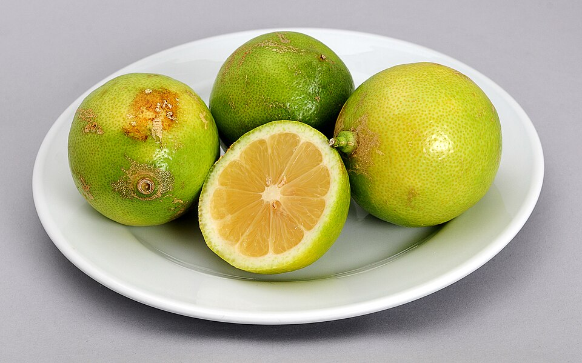

Doces
Biscoitos de maracujá

Ingredientes
- 125 g de manteiga em temperatura ambiente
- 1 xícara de farinha de trigo peneirada
- ¼ de xícara de açúcar de confeiteiro peneirado
- ⅓ xícara de amido de milho (maizena)
- 40 ml de suco de maracujá
Modo de preparo
- Em uma tigela, misture todos os ingredientes até a massa desgrudar da mão. Se necessário, adicione um pouco mais de farinha.
- Faça pequenas bolinhas.
- Se desejar, decore com carimbo de biscoitos.
- Leve ao forno em tabuleiro untado por aproximadamente 30 min em fogo baixo.
Observação
Receita do kit Carimbo UG.